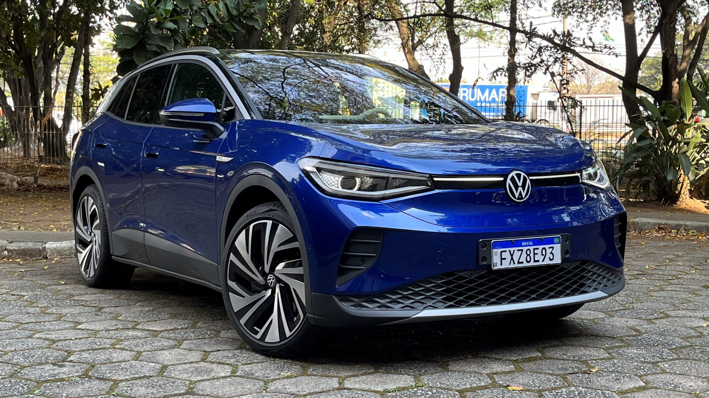

Serviços Volkswagen
Serviços Volkswagen


Manutenção Preventiva da Suspensão
-
Inspeção regular dos componentes da suspensão, como
amortecedores, molas, buchas, braços de controle e juntas
esféricas, para identificar sinais de desgaste, vazamentos ou
folgas.
-
Verificação da altura do veículo, alinhamento e balanceamento
das rodas para garantir o correto funcionamento da suspensão,
evitar desgaste irregular dos pneus e melhorar a estabilidade.
Reparo e Troca de Componentes da Suspensão
-
Substituição de amortecedores desgastados ou com vazamento,
molas quebradas ou enfraquecidas, buchas e pivôs com folga, e
outros componentes danificados que comprometem a segurança e o
conforto.
-
Diagnóstico preciso de ruídos anormais (batidas, rangidos) e
instabilidade na direção ou em curvas, seguido da reparação ou
substituição das peças defeituosas.
Serviços de Alinhamento e Balanceamento
-
Ajuste dos ângulos das rodas para garantir o contato adequado
com o solo, prevenindo o desgaste irregular dos pneus e
otimizando a dirigibilidade do veículo.
-
Correção do equilíbrio das rodas para evitar vibrações no
volante e na carroceria, proporcionando uma condução mais
suave e confortável, além de preservar os componentes da
suspensão.
Manutenção Preventiva do Motor
-
Troca regular de óleo e filtros (óleo, ar, combustível),
verificação e substituição de correias e mangueiras, inspeção
do sistema de arrefecimento (nível do líquido, limpeza) para
evitar superaquecimento e garantir a lubrificação adequada.
-
Verificação do sistema de ignição (velas, bobinas), sistema de
injeção eletrônica, e utilização de aditivos de combustível
para manter o motor limpo e funcionando de forma eficiente.
Serviços no Sistema de Arrefecimento
-
Verificação do nível e da qualidade do líquido de
arrefecimento, limpeza do sistema, teste de pressão para
identificar vazamentos e substituição de mangueiras, radiador,
bomba d'água e termostato, se necessário.
-
Prevenção do superaquecimento do motor, que pode causar danos
graves, através da manutenção adequada do sistema de
arrefecimento.
Serviços no Sistema de Combustível
-
Substituição de filtros de combustível, limpeza de bicos
injetores para garantir a pulverização correta do combustível,
e verificação da pressão da bomba de combustível.
-
Diagnóstico de problemas relacionados ao consumo excessivo de
combustível, falhas na aceleração e dificuldades na partida,
com foco na otimização do sistema de alimentação.
Reparo e Retífica do Motor
-
Serviços de reparo em caso de vazamentos de óleo, problemas de
compressão, falhas nas válvulas ou outros componentes internos
do motor, visando restaurar o seu bom funcionamento.
-
Retífica completa do motor em casos de danos mais severos,
incluindo desmontagem, limpeza, inspeção e substituição de
peças desgastadas ou danificadas, como pistões, bielas,
virabrequim e cabeçote.
Diagnóstico de Problemas no Motor
-
Utilização de equipamentos de diagnóstico eletrônico para
identificar códigos de falha e diagnosticar problemas como
perda de potência, ruídos estranhos (batidas, chiados),
superaquecimento e luz de advertência acesa no painel.
-
Análise de sintomas como fumaça excessiva no escapamento
(branca, azul ou preta), aumento do consumo de óleo ou
combustível, e dificuldades na partida para identificar a
causa raiz do problema.